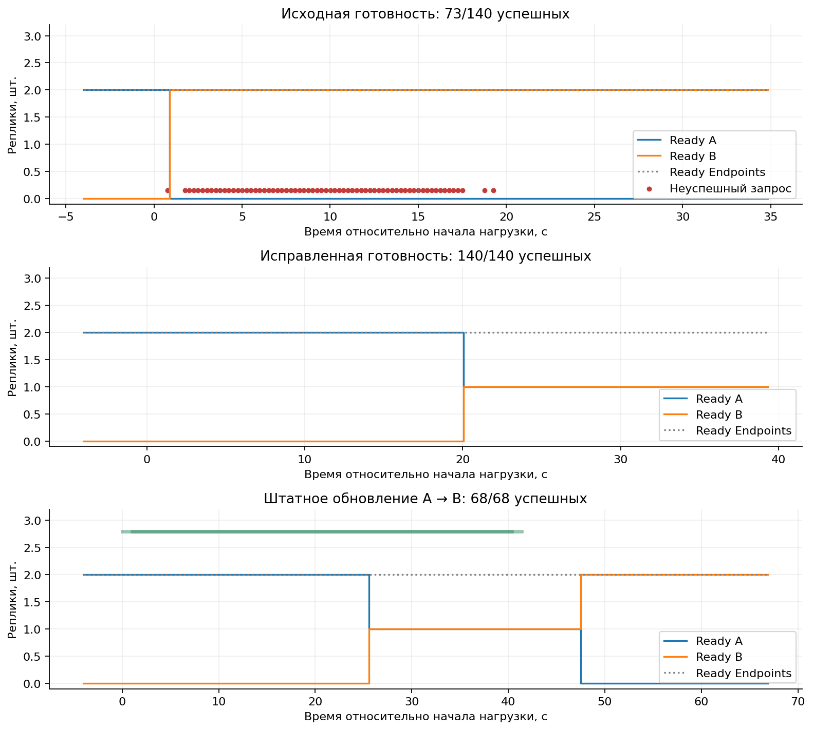
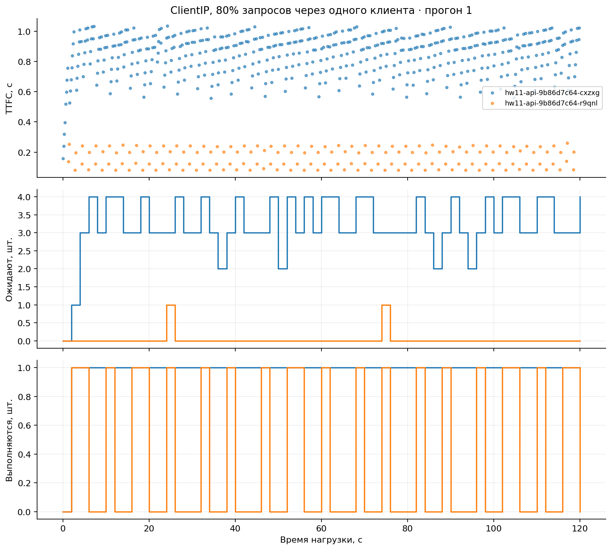
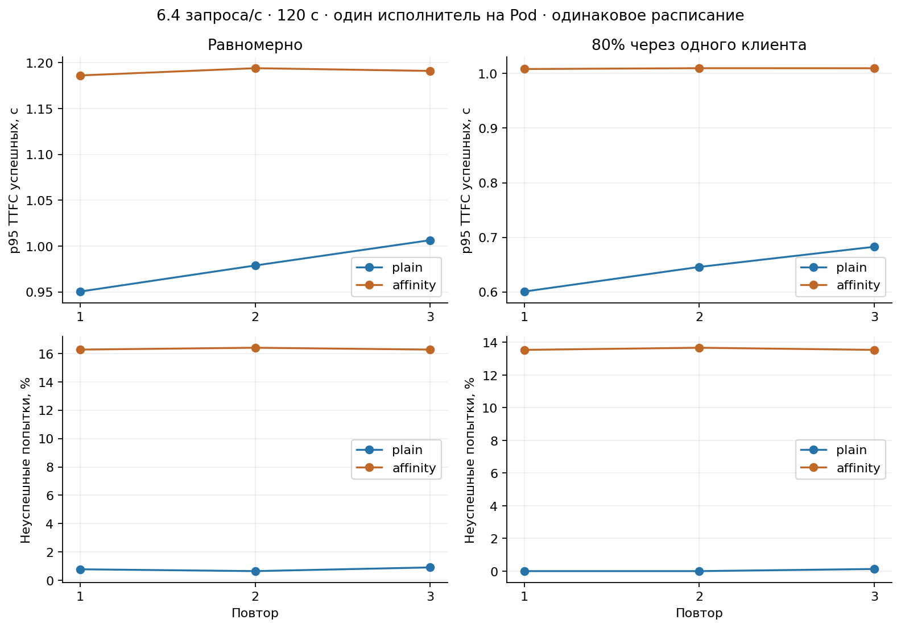
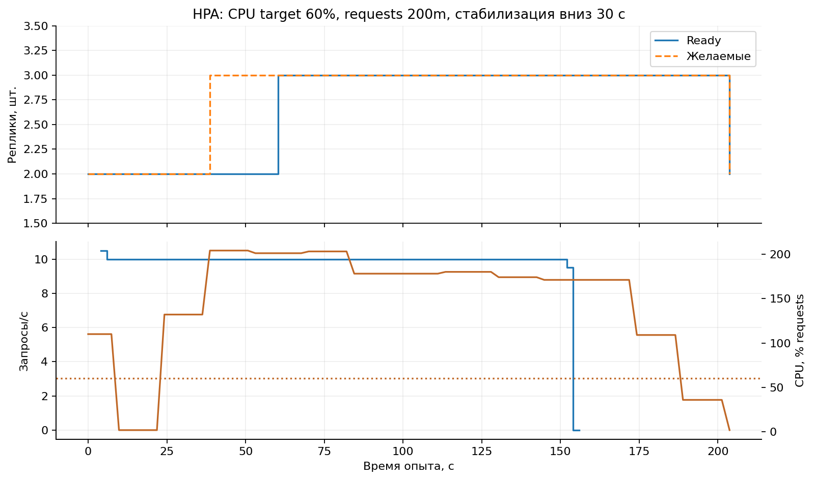

Развёрнут CPU-имитатор с очередью, локальным кешем и выдачей ответа частями. Исправлена преждевременная готовность; проверены обновление, откат, сбой и масштабирование. Сравнены обычный Service и привязка ClientIP.
Docker Desktop: 10 CPU, 7.65 GiB RAM. kind 0.33.0, Kubernetes 1.37.0, один локальный узел arm64, две реплики API. Helm 4.3.1. Отдельный kubeconfig; адрес API и сертификат сверяются с контейнером kind перед каждой командой. Запуск и удаление — в README.
| Контейнер | CPU requests / limit | RAM requests / limit |
|---|---|---|
| API | 200m / 1 CPU | 96 / 192 MiB |
| Клиент | 25m / 500m | 40 / 128 MiB |
| Prometheus | 100m / 500m | 192 / 512 MiB |
| Grafana | 100m / 500m | 128 / 384 MiB |
| Экспортёр Ready | 25m / 200m | 40 / 96 MiB |
| Metrics Server | 50m / 500m | 128 / 256 MiB |
Исходный дефект сохранён в коммите ba29870. Образы, зависимости, ConfigMap и параметры закреплены в репозитории. Маленькие артефакты A.json/B.json проверяются по SHA-256 при загрузке; версия в ответе берётся из загруженного файла. История диалога передаётся клиентом. Локальный кеш — только ускорение, а не хранилище истории.
Гипотеза: работающий HTTP-процесс ещё не готов обслуживать запросы. В исходнике startup/readiness получали 200 до завершения 20-секундного прогрева. Под нагрузкой возникло 67 ошибок из 140 запросов; в журнале есть обращения с warmed=false. После исправления тот же сценарий дал 140 ответов HTTP 200. Ready и EndpointSlice исключают новые реплики до окончания прогрева.
При штатном обновлении A→B прошли все 68 запросов: ноль HTTP 5xx и незавершённых потоков. Два 40-секундных потока начались до обновления. Для этого опыта предусмотрены три одновременных ответа на Pod; в сравнении политик — один. Старые ответы завершились в пределах grace period 40 с; preStop — 3 с, ожидание завершения uvicorn — 30 с.
Заведомо неготовая B не получила рабочий трафик. После управляемого отката ответы подтвердили sim-A. Замена Pod сохранила ту же версию, а продолжение диалога проверено непосредственно на новой реплике.
При отдельном принудительном завершении контейнера результаты иные: успешных ответов — 2, оборванных — 5, отказов — 13, тайм-аутов — 3, прочих HTTP-ошибок — 1. Все 24 попытки сохранены. Kubernetes обнаружил отказ, перезапустил контейнер и дождался прогрева. Контрольный запрос после восстановления успешен; автоматических клиентских повторов нет.

Гипотеза: привязка к реплике сохраняет локальность кеша, но может перегрузить одну очередь. Сравнены два Service над теми же двумя Pod. Четыре клиента имеют разные Pod IP; keep-alive отключён, повторов нет. Сеть — kube-proxy iptables, masqueradeAll=false. Источники TCP-соединений на API подтверждены трассой.
Каждая комбинация выполнена трижды по 120 секунд: 6.4 запроса/с, 768 попыток. При равномерном трафике клиенты отправляют поровну; при перекосе один клиент отправляет 616 запросов, то есть 80.2% после округления. Тела, длины, лимиты и расписание совпадают между политиками. Начальный кеш пуст, прогрев завершён. Порядок политик чередуется.
Параметры имитатора: один исполнитель и четыре места ожидания на Pod; кеш на четыре префикса; вытесняется самый давно использованный. Попадание в кеш требует 0.08 с процессорного времени, промах — 0.12 с. Ответ содержит четыре части с интервалом 0.05 с. Это заданная модель нагрузки, а не производительность языковой модели.
| Трафик | Политика | Повтор | n | Успехи | Ошибки | p50 TTFC, с | p95 TTFC, с | p95 полного, с |
|---|---|---|---|---|---|---|---|---|
| even | affinity | 1 | 768 | 643 | 125 | 0.978 | 1.186 | 1.341 |
| even | affinity | 2 | 768 | 642 | 126 | 1.004 | 1.194 | 1.349 |
| even | affinity | 3 | 768 | 643 | 125 | 0.992 | 1.191 | 1.347 |
| even | plain | 1 | 768 | 762 | 6 | 0.318 | 0.951 | 1.106 |
| even | plain | 2 | 768 | 763 | 5 | 0.323 | 0.979 | 1.134 |
| even | plain | 3 | 768 | 761 | 7 | 0.319 | 1.007 | 1.162 |
| skew | affinity | 1 | 768 | 664 | 104 | 0.811 | 1.008 | 1.164 |
| skew | affinity | 2 | 768 | 663 | 105 | 0.812 | 1.010 | 1.166 |
| skew | affinity | 3 | 768 | 664 | 104 | 0.812 | 1.010 | 1.165 |
| skew | plain | 1 | 768 | 768 | 0 | 0.204 | 0.601 | 0.756 |
| skew | plain | 2 | 768 | 768 | 0 | 0.185 | 0.646 | 0.800 |
| skew | plain | 3 | 768 | 767 | 1 | 0.168 | 0.683 | 0.837 |
В сценарии с перекосом обычный Service снизил среднее по трём прогонам p95 TTFC успешных ответов на 36.3% относительно ClientIP. Ошибки: 1/2304 и 313/2304 соответственно. Решение — отказаться от обязательной ClientIP-привязки. При равномерном трафике доля попаданий среди успешных ответов уменьшилась с 43.6% до 26.8%. При перекосе она почти одинакова: 82.5% и 83.2%. Это наблюдения по завершённым ответам: отказавшие запросы кеш не проверяют.


Гипотеза: вычислительная нагрузка вызовет масштабирование по CPU, но новая реплика не устранит жёсткую привязку клиента. Настроен HPA autoscaling/v2: минимум 2, максимум 3, цель CPU 60% от requests 200m. Доступность Resource Metrics API проверена. Нагрузка создаёт настоящий расход CPU через SHA-256, а не только ожидание.
Новый Pod создан через 33.8 с после начала нагрузки и стал Ready через 54.8 с. После окончания нагрузки кластер вернулся к двум готовым репликам за 51.0 с; окно стабилизации вниз — 30 с. В повторе ClientIP из 768 попыток успешны 553, отказов 215. На исходные реплики пришлось 718 и 50 запросов; новая реплика получила 0. Данные сохранены в hpa-hot внутри архива измерений. HPA использует среднюю загрузку: горячая очередь сама по себе не гарантирует превышения порога CPU и не переносит закреплённые запросы.

Два правила Prometheus: p95 до первой части выше 0.4 с при минимум десяти успешных ответах за минуту; доля отказов выше 10% при минимум двадцати попытках за минуту. Условие удерживается 10 с. Управляемая нагрузка и последующее снижение дали следующие переходы:
| Правило | С начала опыта, с | Состояние |
|---|---|---|
| FirstChunkSlow | 0.0 | inactive |
| RejectionsHigh | 0.0 | inactive |
| FirstChunkSlow | 16.1 | pending |
| RejectionsHigh | 16.1 | pending |
| FirstChunkSlow | 26.1 | firing |
| RejectionsHigh | 26.1 | firing |
| RejectionsHigh | 110.5 | inactive |
| FirstChunkSlow | 112.5 | inactive |
Клиент использует монотонные часы. TTFC = время первой содержательной части − время отправки; средний inter-chunk latency = (время последней части − время первой)/(N−1), при N=1 значение отсутствует. Отдельно сохранены плановое время, фактическая отправка, завершение, статус, версия, Pod и число частей. Ошибки и тайм-ауты не включаются в перцентили успешных ответов, но входят в общий учёт попыток. Максимальное опоздание генератора: 0.048 с.
Клиентские p50/p95 рассчитаны линейной интерполяцией. Prometheus хранит classic Histogram; серверный p95 получен из суммарных bucket-счётчиков с сохранением le. До и после каждого прогона сохранены счётчики после паузы на сбор метрик. Это тот же набор завершённых ответов; клиентское время дополнительно включает транспорт.
| Прогон | Успехи клиента | Завершения сервера | p95 клиента, с | p95 Histogram, с |
|---|---|---|---|---|
| load-even-affinity-1 | 643 | 643 | 1.186 | 1.542 |
| load-even-affinity-2 | 642 | 642 | 1.194 | 1.542 |
| load-even-affinity-3 | 643 | 643 | 1.191 | 1.542 |
| load-even-plain-1 | 762 | 762 | 0.951 | 1.204 |
| load-even-plain-2 | 763 | 763 | 0.979 | 1.241 |
| load-even-plain-3 | 761 | 761 | 1.007 | 1.265 |
| load-skew-affinity-1 | 664 | 664 | 1.008 | 1.522 |
| load-skew-affinity-2 | 663 | 663 | 1.010 | 1.523 |
| load-skew-affinity-3 | 664 | 664 | 1.010 | 1.522 |
| load-skew-plain-1 | 768 | 768 | 0.601 | 0.721 |
| load-skew-plain-2 | 768 | 768 | 0.646 | 0.719 |
| load-skew-plain-3 | 767 | 767 | 0.683 | 0.743 |
Максимальное расхождение количества завершений: 0. Оценка Histogram приближённая: линейная интерполяция внутри широкого bucket может заметно отличаться от точного клиентского перцентиля. PromQL и исходные счётчики сохранены; мониторинг собирается каждые 2 с.
Шесть проверок через Kubernetes пройдены: прогрев, штатное обновление, откат, восстановление версии и истории на новой реплике, учёт принудительного обрыва, изоляция двух диалогов. Ещё четыре проверки защищают выбор локального кластера. Исходный дефект обнаружен той же проверкой прогрева.
При очереди 3 с на реплике A и пересчёте префикса за 0.8 с на свободной реплике B новый запрос следует направить B: при прочих равных он начнёт обслуживаться раньше. Перед допуском нужно проверить свободный слот, ограничение очереди и остаток клиентского тайм-аута. Для выбора нужны замеры стоимости пересчёта по длине контекста, времени передачи истории, вероятности попадания в кеш, очередей и ошибок. Сравнивать следует ожидаемое время до первого ответа, а не только наличие кеша.
История должна быть у клиента либо во внешнем хранилище. При потере A новый Pod получает историю и восстанавливает префикс вычислением; локальный кеш может исчезнуть. Уже начатый поток остаётся на обслуживающей реплике до завершения в пределах grace period. Его нельзя незаметно перенаправить B: повтор может дублировать вывод. При обрыве нужен явный результат ошибки и согласованное правило новой попытки.
Это соответствует кейсу Google Cloud / Vertex AI со слайда 70 лекции: маршрутизация учитывала и кеш префикса, и очередь; увеличение веса очереди позволяло обходить перегруженные реплики даже при попадании в кеш. Наш обычный Service решает более узкую задачу распределения. Совместный учёт кеша и очереди потребует отдельного сравнения на настоящем движке.
Один узел и общий CPU: добавление реплики не добавляет физические процессоры. Имитация кеша не воспроизводит KV-cache GPU. Измерены части ответа; TTFT, TPOT и tokens/s модели не заявляются. Три повтора показывают изменчивость этого стенда, а не гарантии для производственной системы.
Prometheus: история не более двух часов и 256 MB, том 512 MiB. Grafana: том 512 MiB. Стартовый лимит Grafana 128 MiB оказался ниже фактического объёма около 171 MiB и был увеличен до нагрузочных сравнений. На учебном узле containerd занимает 2.82 GiB, данные kubelet — 234 MiB; они находятся в отдельном Docker-томе. Учтён также записываемый слой контейнера. Размеры образов и итоговый замер сохранены в environment.json и resources-final.json внутри архива измерений. Команды удаления собственного стенда приведены в README.
Сырые запросы · Журналы и измерения · Сводная таблица · По репликам · Счётчики Histogram · Дашборд Grafana